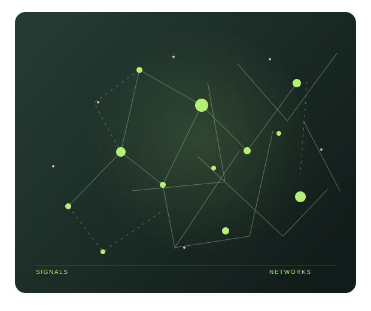

Competing narratives in moments of protest
Studying symbolic communication and competing narratives during the 2025 Indonesia protests using YouTube and Instagram data.
Graduate researcher · Little Rock, Arkansas
I study how ideas move through online spaces—and build practical tools to make sense of the data behind them.
M.S. student in Information Science at UA Little Rock
Graduate Research Assistant at the COSMOS Research Center

A bit about me
I’m a master’s student in Information Science at the University of Arkansas at Little Rock and a Graduate Research Assistant at the COSMOS Research Center.
My research explores online narratives, social media behavior, and how information travels through digital spaces. I work with AI methods to study large text and visual datasets, and I’m also learning to turn ideas into useful software.
Outside a specific research question, I’m curious about the connections between people, content, and recommendation systems—and about making complex data easier to explore and understand.
Start a conversationQuestions I’m exploring
A selection of topics and projects drawn from my research. Publication details will be added when citations are available.
Studying symbolic communication and competing narratives during the 2025 Indonesia protests using YouTube and Instagram data.
Examining focal structures and recommendation networks in YouTube to understand how content pathways take shape.
Exploring image features, caption representations, multimodal alignment, and visual typicality in engagement prediction.
Applying language models to understand how context can support the detection of toxic content.
Publications — Citation details have not been provided yet. Add verified titles, publication status, and paper or DOI links here when ready.
From idea to implementation
Software and hands-on experiments live here, separate from academic research and publications.
A browser-based tool that counts words, explores text and hashtag statistics, creates a simple extractive summary, and rewrites supported phrases using local rules.
More projects will be added as I build and learn.
Tools, methods, and interests
These are areas I work with or am interested in. I don’t use proficiency scores; I’ll add specific tools as I’m ready to stand behind them.
HTML, CSS, and vanilla JavaScript through hands-on web projects.
TODO: Add verified programming languages and development tools.
Artificial intelligence, machine learning, natural language processing, large language models, and multimodal / vision-language models.
Data science and data visualization are areas of interest.
TODO: Add the specific libraries and tools you use.
Clustering, embeddings, graph analysis, diffusion modeling, social network analysis, and information diffusion.
Always in progress
I’m building my web development and software engineering fundamentals one project at a time. This portfolio is part of that process: a static site today, with room to grow as I learn.
Semantic HTML, responsive CSS, vanilla JavaScript, Git, and GitHub Pages.
Small Python utilities, AI-powered applications, and new web features.
Say hello
I’m open to conversations about research, collaboration, and opportunities to build thoughtful technology.
Find me on GitHubContact & profiles
Replace these placeholders with public details you’re comfortable sharing.